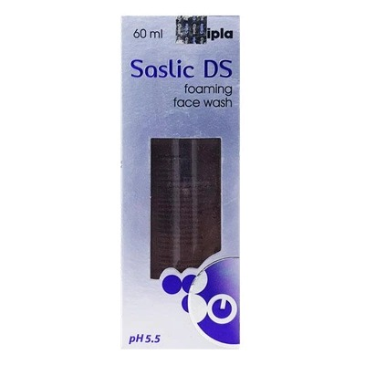
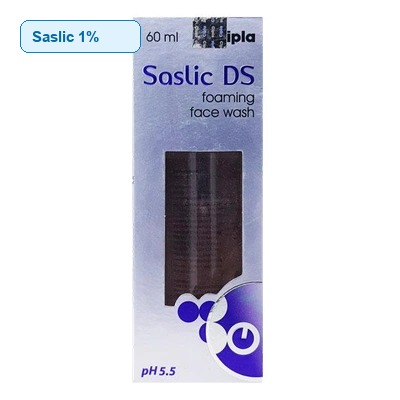
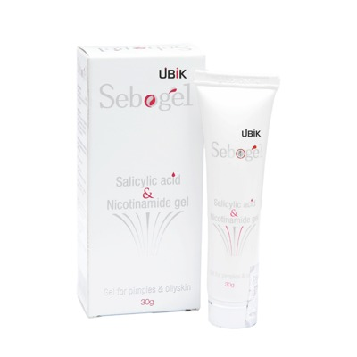
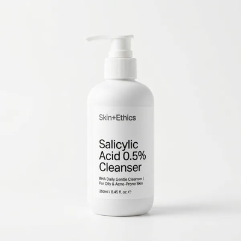

Blackheads, greasy shine, and persistent breakouts happen when thick sebum traps dead skin cells inside your pores. Cipla Saslic is India's most prescribed salicylic acid face wash. Here is the doctor-backed guide on picking between 1% and 2% strength, plus the 60-second contact rule that makes it actually work.
Consultant Dermatologist & Acne Specialist
Salicylic acid is a Beta Hydroxy Acid (BHA) that cuts through facial oil to unclog congested follicles[1]. Your ideal choice depends on your skin's oil production and current tolerance:
Most surface cleansers only rinse away superficial sweat and dust. To clear stubborn blackheads and inflamed bumps, you need an active that dissolves oil from within the pore.
Because sebum is composed of triglycerides, squalene, and wax esters, water-based ingredients bounce off clogged pores. Salicylic acid mixes with facial sebum, penetrating deep into the follicle lining to unglue dead cells[2].
Blackheads are not trapped dirt; they are open plugs of sebum and keratin that darken upon exposure to oxygen. BHA breaks the intercellular bonds holding these sticky plugs together, loosening them naturally without physical squeezing.
Derived from the same chemical family as aspirin (acetylsalicylic acid), topical salicylic acid possesses inherent soothing properties that help calm the redness and swelling of early inflammatory acne lesions[4].
Compare how Cipla Saslic and Saslic DS differ across strength, skin tolerance, vehicle foam type, and pricing in Indian pharmacies.
| Feature | Cipla Saslic Foaming Wash | Cipla Saslic DS Foaming Wash |
|---|---|---|
| Salicylic Acid Strength | 1.0% w/v (Mild Concentration) | 2.0% w/v (Double Strength · Maximum OTC) |
| Manufacturer | Cipla Ltd. (India) | Cipla Ltd. (India) |
| Dispenser Vehicle | Aerosol-free pump creating airy foam | Aerosol-free pump creating airy foam |
| Ideal Skin Type | Combination, mildly oily, or easily irritated skin | Very oily, congested, and acne-prone skin |
| Primary Target | Surface oiliness, mild whiteheads, teenage acne | Stubborn blackheads, deep clogged pores, cystic bumps |
| Starting Frequency | 3 to 4 evenings per week | 2 to 3 evenings per week (titrate up slowly) |
| Drying Potential | Low (Gentle on moisture barrier) | Moderate (Needs proper moisturizing) |
| Bottle Volume | 60 ml | 60 ml |
| India Retail Price (Approx.) | ₹330 – ₹370 | ₹430 – ₹480 |
| Dermatologist Verdict | Best for maintenance and beginners | Best for clearing active, stubborn congestion |
Using an active face wash requires different technique than a standard foaming cleanser. Follow this doctor-approved method to maximize pore clearance while preserving your barrier.
Splash your face with lukewarm water. Hot water strips natural moisture, while icy water tightens pores and prevents the foam from spreading evenly.
Dispense 1 to 2 pumps of foam into your palm. Gently distribute across your T-zone, nose, chin, and forehead where oil glands are most dense.
Massage gently in small circles and let the foam sit on your skin for a full 60 seconds. This contact time is needed for the BHA to penetrate into pores[5].
Rinse thoroughly with plain water and pat dry with a clean towel. Immediately follow with an oil-free, non-comedogenic moisturizer to lock in hydration.
When you begin using Saslic DS, your skin may experience changes. Here is how to know if your skin is clearing old clogs or crying for help.
Salicylic acid speeds up cellular turnover. Micro-comedones that were already brewing beneath the skin surface are brought up faster than usual.
Here are genuine packshots, active percentages, and verified pharmacy details for Cipla Saslic alongside top dermatologist alternatives.

Double Strength foaming wash for persistent blackheads, closed comedones, and oily acne breakouts. Gold standard Indian prescription BHA.

Gentle foaming wash for teenagers, combination skin, or mild oiliness. Clears daily grime without provoking dry or peeling patches.

Pharmacy leave-on gel combining Salicylic Acid with Niacinamide. Excellent spot treatment for single inflamed pimples and post-acne redness.

Low-strength daily cleanser designed for sensitive skin that cannot tolerate 2% foaming washes. Clears superficial pore residue smoothly.
Board-certified dermatologist Dr. Dray demonstrates how to wash with active salicylic acid cleansers to maximize pore clearance while preventing peeling and barrier irritation.
Video by Dr. Dray | Board-Certified Dermatologist
Select your primary skin condition below to see our personalized dermatologist recommendation:
Your skin needs gentle pore maintenance without unnecessary drying. Saslic 1% will dissolve daily sebum plugs on your nose and forehead while keeping your cheek barrier soft and calm. Use it 3 nights a week.
Your active congestion requires the gold standard 2% concentration. Double Strength BHA cuts through thick sebum and clears the follicle lining. Apply for 60 seconds on wet skin once every night, and follow with an oil-free moisturizer.
Do not combine 2% Saslic DS directly with Tretinoin in the same evening routine. This causes severe peeling and barrier failure. Switch to a gentle hydrating wash (like CeraVe or Cetaphil) at night, and consider Saslic 1% only in the morning on alternating days if oiliness persists.
Direct, doctor-reviewed answers to common questions about Cipla Saslic and salicylic acid face washes in India.
Scan your face in 10 seconds. Our AI dermatological screening pinpoints pore congestion, sebum levels, and active comedone distribution instantly.
Scan Your Skin (Free)